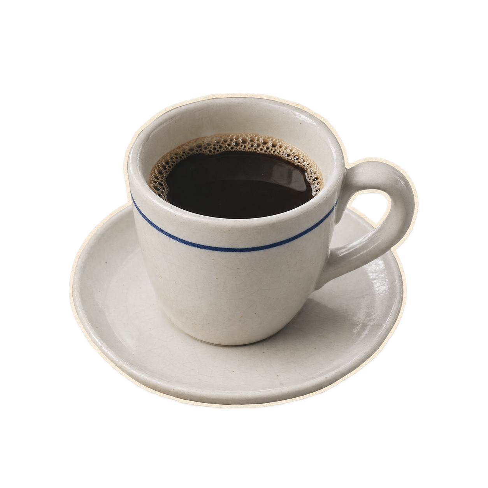

创刊号 / 2026
读过的东西，如何真正留下来
把读过的，
变成自己的。

从书页出发，
在一次次尝试中找到答案。
读过的东西，如何真正留下来

从书页出发，
在一次次尝试中找到答案。
写在前面
合上书以后，
真正的阅读才刚刚开始。
我们常常记得读过什么，却不一定说得清它改变了什么。一段解释在纸面上很顺畅，到了自己的问题面前，仍然可能无从下手。
BaiLian 想留住的，是这两者之间的过程：把一句话换成自己的解释，为一个判断找出适用的条件，再用一次足够小的实践，看看理解是否站得住。
所以，这份杂志里既有阅读，也有动作；既留下判断，也留下疑问。那些不符合预期的结果，同样值得占据一页。
不急着收集更多答案。
先让一个问题，在手中变得清楚。
BaiLian
关于学习与实践的编辑手记
沿着纸页往下读，也可以从一个正在困扰你的问题开始。
理解一个解释，和独立完成一次判断，中间还隔着一段需要亲手走过的路。
下次读到一个让你点头的观点，先停一会儿：如果关掉这篇文章，你会怎样向别人解释？如果条件变了，它还成立吗？
选一个小到今天就能开始的问题。
如果这个解释成立，你应该观察到什么？写得具体一点，方便事后比较。
保留能帮助比较的条件，完成一次小尝试。记录真实结果，包括不符合预期的部分。
“发生了什么”和“为什么发生”放在不同的位置。解释可以修改，观察需要保留。
最值得留下的，
有时正是那个意外。
局部在变化，整体仍然有自己的秩序。看问题时，也试着在细节和全貌之间来回切换。
不必在今天完成所有事。
挑一段值得继续思考的内容，把你最想验证的地方写下来。下次开始时，你就有了一个清楚的起点。
我想验证的是：
愿下一次翻开时，你已经多了一点自己的发现。
回到封面